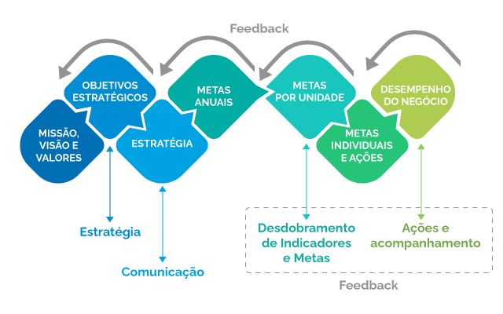
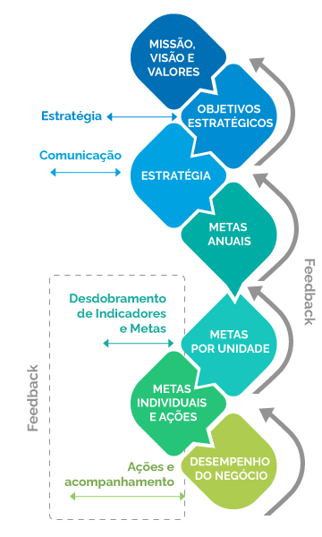

O líder enquanto gestor do desempenho
Bem-vindo(a) à aula 7 do curso Ferramentas para Gestão de PessoasMunido de diversas ferramentas de comunicação e de diferentes perspectivas de liderança sobre essa ótica, chega o momento de abordar a questão da gestão de desempenho.
Dentro desse escopo, a parte que diz respeito ao feedback é um momento delicado e, por vezes, até temido por muitos gestores, mas utilizando as técnicas de comunicação vistas neste curso, esta tarefa pode se tornar mais produtiva e assertiva.
Nesta aula, você conhecerá os principais pilares da gestão de desempenho e suas etapas, e poderá ver algumas dicas práticas para aplicação destes conceitos. Aproveite!
Ao final da aula, você encontrará recomendações de leituras e vídeos.
Vamos lá?
Bom estudo!
O papel do líder na Gestão do Desempenho
O líder precisa conjugar diversas competências e atividades para gerir sua equipe e contribuir para o alcance dos objetivos organizacionais. A estratégia da organização precisa ser desdobrada em metas para cada área e setor, que por sua vez se desdobram em metas de equipe e individuais.
Neste momento, a gestão do desempenho é fundamental, no sentido em que se propõe mensurar os resultados da empresa por meio da performance de seus colaboradores. Neste caso, as metas funcionam como uma bússola corporativa, e podem ser indicadores importantes para identificar quais as competências e habilidades profissionais precisam ser desenvolvidas junto aos colaboradores, bem como quais são os pontos fortes e fracos de sua equipe.
Como definir metas?
O processo de definição de metas de forma clássico é feito top-down, onde o gestor “recebe” suas metas do nível hierárquico superior.
Na prática, tem sido cada vez mais frequente que o gestor consiga ler os cenários de sua atuação e formule as metas de sua área (bottom/up).
É papel do líder comunicar sua visão, transmitindo sua mensagem aos funcionários de sua equipe, seja ela uma missão compartilhada pela alta direção ou a visão de determinada área. Tudo deve estar alinhado aos objetivos estratégicos da instituição e a mensagem deve ser pautada por diretrizes claras para todos. A estratégia de comunicação adequada faz toda a diferença.
Como se dá o desdobramento de metas?
O gráfico a seguir demonstra o fluxo de desdobramento desde os direcionadores estratégicos da organização até o plano de ação individual.
A partir dessa visão sistêmica, cada indivíduo é capaz de entender o que precisa fazer para atingir suas metas individuais, contribuir com as metas da sua unidade, que no conjunto vão compor as metas anuais da sua organização, tudo alinhado aos valores, visão e missão da organização.
A Fiocruz realiza, anualmente, o processo de Gestão de Desempenho que alinha as metas institucionais às metas das equipes e por consequência às metas individuais. Observe que o processo de Gestão de Desempenho na Fiocruz segue o desdobramento apontado no gráfico a seguir.
 No dia a dia, na gestão da sua equipe:
O uso de um sistema de desempenho depende fundamentalmente da liderança
Para refletir...
Como planejar de modo eficaz o trabalho das pessoas?
Como acompanhar?
Como avaliar?
Como administrar as informações geradas pelos sistemas de desempenho?
Como transformar subsídios gerados (evidências de pontos fortes/fracos) em ações de T&D e em novos planos de trabalho?
Características das metas
A construção de qualquer meta deve adotar critérios claros e mensuráveis. Para isso, é necessário definir um objetivo principal, um índice quantitativo que se pretende alcançar e um prazo estabelecido para o alcance deste objetivo.
META = OBJETIVO + VALOR + PRAZO
Onde:
| Objetivo |
Objetivo a ser almejado, medido por meio do indicador. |
|---|---|
| Valor |
Número desejado de desempenho do indicador. |
| Prazo |
Tempo no qual se espera o alcance do valor. |
Exemplo:
Objetivo = Turn over
Valor = 2%
Prazo = Dezembro 2022
META = Reduzir o turn over para 2% até 30/12/2022
Característica das metas
Na aula 10 do primeiro curso da série “Os Desafios da liderança”, que aborda o Comportamento Organizacional, já foi mencionada a construção de meta SMART, no que diz respeito ao foco nos resultados. Esta mesma metodologia pode ser aplicada no contexto da gestão do desempenho.
S pecific - Específica
M easurable - Mensurável
A ttainable - Atingível
R elevant - Relevante
T ime-bound - Temporal
|
Específica: Define o objetivo e como a meta será realizada |
|
Mensurável: Fornece dados e informações para uma avaliação objetiva e quantificável |
|
Atingível: Potencial da meta se transformar em realidade |
|
Relevante: Prevê resultados significativos para a empresa (difere de atividade) |
|
Temporal: Compreende um período de tempo, com marcos de acompanhamento |
Lista de verbos mais utilizados na definição de metas
Na construção das metas, é importante adotar uma linguagem consistente e clara para o entendimento de todos. Apresentamos aqui uma lista de verbos que podem ajudar na construção de metas para sua equipe.
Potencial x desempenho
Todas as pessoas possuem potencial para desenvolver diversas atividades, mas nem sempre o desempenho das tarefas corresponde ao potencial que o indivíduo possui. Muitas vezes, o potencial pessoal não está relacionado à tarefa a qual o indivíduo foi designado. O papel do líder nesse contexto é identificar esses potenciais e, na medida do possível, tentar aproveitá-los em tarefas correlatas ao talento e interesse pessoal, otimizando assim o desempenho profissional daquela pessoa.
POTENCIAL
Possibilidades do desempenho futuro
DESEMPENHO
Confirmação da expectativa
"Apesar da importância do desenvolvimento do potencial, nem sempre as organizações investem nesta direção. Infelizmente, o aproveitamento inadequado do potencial humano ou o seu desconhecimento são fatos comuns que, não raro, propiciam delegação de tarefas incompatíveis com o potencial do empregado, provocando desconforto e instabilidade”
"Gerir o desempenho significa avaliar a extensão da discrepância, identificar os fatos geradores desta situação e, em seguida, intervir, tomando decisões para eliminar as variáveis constituídas em fontes de problemas, como a delegação incompatível com o perfil de competência, a desmotivação, a ausência de integração, a desestruturação do processo de trabalho, a ausência de nitidez quanto aos propósitos."
Avaliar desempenho não significa avaliar a pessoa. Implica analisar o nível de contribuição aos resultados da equipe e da instituição.
Processo de Gestão do Desempenho
Etapas do processo
Para realizar a Gestão do Desempenho de maneira eficaz é preciso organizar este processo em três etapas distintas:
PLANEJAMENTO
Definição de metas e indicadores, contendo detalhamento quantitativo, prazo, profissionais responsáveis, periodicidade da avaliação do desempenho, dentre outros aspectos relevantes.
ACOMPANHAMENTO
Acompanhar a evolução dos projetos no cotidiano do trabalho, buscando identificar pontos positivos e oportunidades de melhoria, mapeando possíveis correções.
AVALIAÇÃO
Aplicação do instrumento de avaliação na periodicidade definida e dar feedback aos profissionais de sua equipe, abrindo espaço também para recebimento de feedback do funcionário com relação à liderança.
Feedback – ferramenta importante para a gestão do desempenho
Para ser um bom líder, você precisa antes de tudo conhecer a si mesmo. É preciso ter inteligência emocional para reconhecer seus estilos, preferências e limitações, e, em seguida, conhecer também sua equipe.
É preciso ter maturidade tanto para dar quanto para receber feedback, e tirar proveito das oportunidades de melhorias indicadas.
A aula 8 do curso 1 da série “Os desafios da liderança” aborda o “Feedback como ferramenta de transformação”. Relembrando...
Os sete passos para o feedback de desempenho
Analisar previamente o comportamento e o contexto em que a pessoa está inserida;
Criar o ambiente propício para o feedback - ajustar-se à receptividade;
Enfatizar os aspectos favoráveis;
Analisar conjuntamente aspectos a aprimorar (sempre que possível, exemplifique com fatos);
Descrever o comportamento desejado;
Elaborar um plano de ação para o desenvolvimento;
Obter um compromisso mútuo com o plano de ação.
Veja tudo que você já aprendeu até agora no curso 2 e como pode ajudá-lo a aplicar os 7 passos para o feedback de desempenho.
Seja empático, tente observar a leitura de mundo do outro e em qual quadrante da liderança situacional o colaborador se encontra em termos de autonomia e prontidão para a tarefa
Exercite a comunicação assertiva
Reconheça as conquistas e as competências do profissional
Mantenha a escuta ativa e a fala assertiva
Utilize as técnicas de comunicação não violenta
Estabeleça um Rapport de Sintonia e use a técnica de recapitulação
Resumo da aula 7
Chegamos ao final da aula 7
O percurso desta aula apresentou importantes diretrizes para o estabelecimento de metas de desempenho, as etapas envolvidas e dicas sobre como otimizar cada etapa para tornar esta tarefa produtiva e eficaz.
É possível observar o grande nível de sinergia com relação às etapas de gestão de desempenho e todas as estratégias de comunicação vistas até agora. O líder deve sempre ter em mente questões como a empatia e a comunicação não violenta durante o processo de gestão do desempenho, pois são grandes facilitadores desta missão.
Antes de seguir para a aula 8, faça a atividade proposta para essa aula.
AvaliaçãoNão deixe de conferir as indicações de leituras e vídeos desta aula!
IndicaçõesAguardamos você na aula 8!